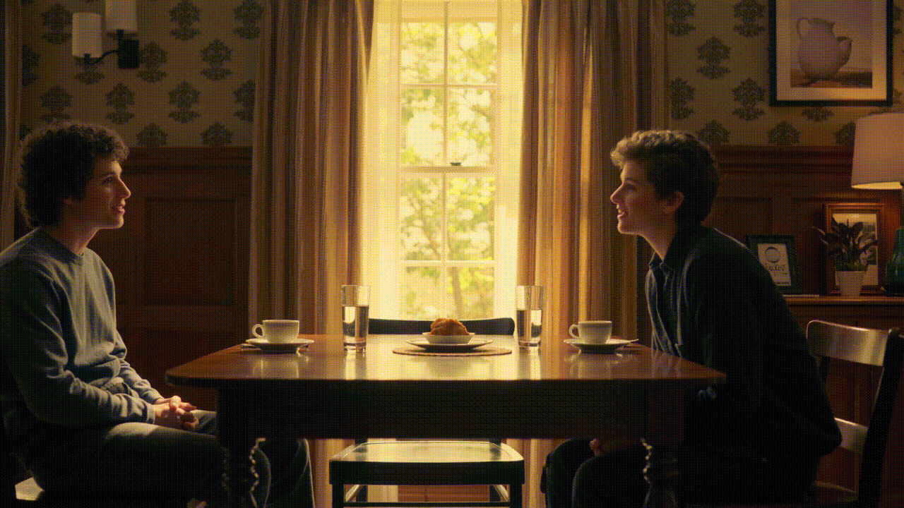

A non-parametric method to support granular control over the temporal placement of each text prompt in video generation.


We enforce temporal locality by injecting a distance-based penalty term, C, into the cross-attention mechanism:
We penalize how much a query i attends to the key j relative to how far the query is from the key’s assigned midpoint. Given a prompt P assigned to segment S of the video with midpoint ms, the penalty matrix for segment S is:
Here, f(i) is the latent frame index of the ith query token, w is a small window size proportional to the length of the segment, and σ is derived so attention weights decay to a negligible factor ε at the segment boundaries. This keeps temporal prompts from interfering with neighboring prompts.



 TempoCtrl: Inference-Time Temporal Cross-Attention Control
TempoCtrl: Inference-Time Temporal Cross-Attention Control